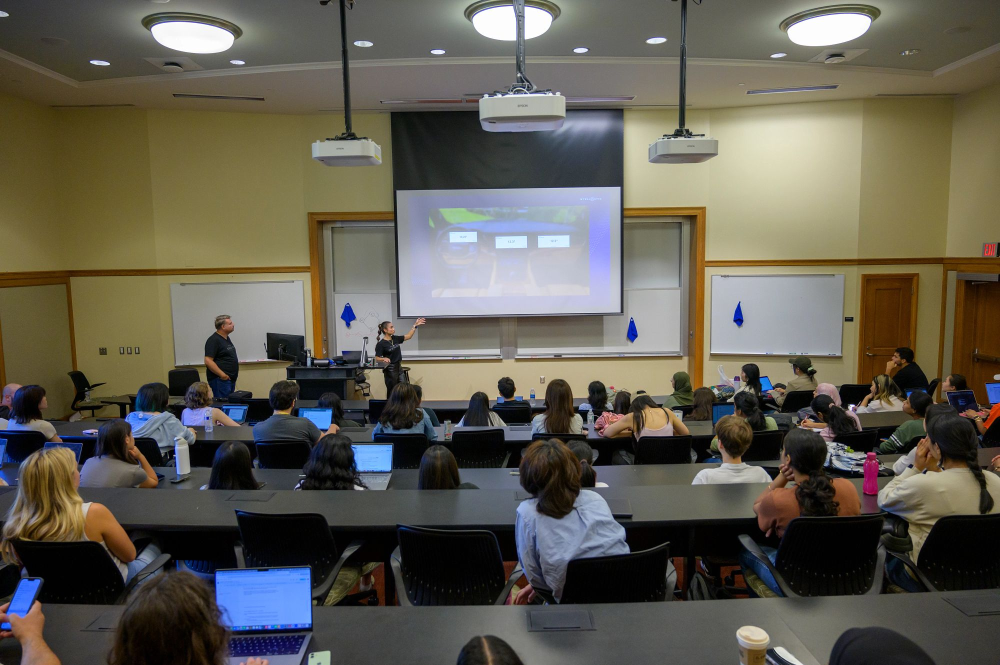

Your resume is often your first impression—an opportunity to highlight your unique strengths to potential employers.

Steps to Success
- Download a Template: Start with an approved UMSI format.
- Gather Experiences: List jobs, internships, and relevant projects.
- Write Impact Bullets: Use action verbs to show results.
Resume FAQ
How long should my resume be?
For most UMSI students and new grads, one page is best.
Do I need a different resume for each application?
Yes, it is wise to tailor your resume for every opportunity.
Connect with the UMSI Career Development Office
The UMSI Career Development Office (CDO) offers personalized support through appointments, events, and resource guides. Visit the CDO website or find us on campus to learn more, schedule a coaching session, or just say hello.